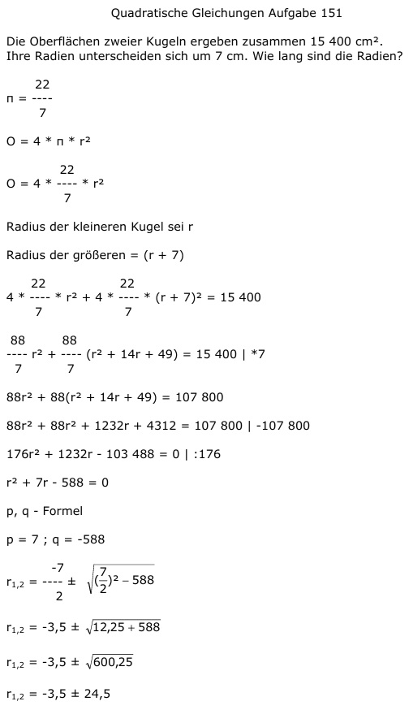

Aufgabe 151 Die Oberflächen zweier Kugeln ergeben zusammen 15 400 cm2. Ihre Radien unterscheiden sich um 7 cm. Wie lang sind die Radien? 22 π = ---- 7 O = 4 * π * r2 22 O = 4 * ---- * r2 7 Radius der kleineren Kugel sei r Radius der größeren = (r + 7) 22 22 4 * ---- * r2 + 4 * ---- * (r + 7)2 = 15 400 7 7 88 88 ---- r2 + ---- (r2 + 14r + 49) = 15 400 |*7 7 7 88r2 + 88(r2 + 14r + 49) = 107 800 88r2 + 88r2 + 1232r + 4312 = 107 800 |-107 800 176r2 + 1232r - 103 488 = 0 |:176 r2 + 7r - 588 = 0 p, q - Formel p = 7 ; q = -588  r1,2 = -3,5 ± 24,5 r1 = -3,5 + 24,5 = 21 cm Radius der kleineren Kugel Radius der größeren Kugel = 21 cm + 7 cm = 28 cm r2 = -3,5 - 24,5 = -28 keine Lösung, negative Länge